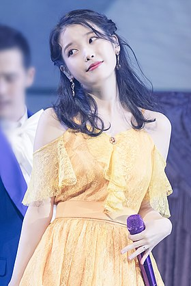

Корейська кухня
Корейська кухня
Про Корею
Культура Південної Кореї розвинулася з традиційної культури Кореї, яка переважала в ранніх корейських кочових племенах. В країні величезна кількість пам'ятників, буддійських храмів та статуй.[1] Підтримуючи тисячі років давньої корейської культури з впливами з давньокитайської культури, Південна Корея відділилася від культури Північної Кореї[в інших мовах], почавши власний культурний розвиток від поділу Кореї у 1945. Індустріалізація, урбанізація та вестернізація Південної Кореї, особливо Сеулу, принесли зміни до способу життя корейців.
Лі Чі Ин (кор. 이지은, нар. 16 травня 1993, Сеул, Південна Корея) більш відома за сценічним ім'ям IU (кор. 아이유) — південнокорейська співачка, авторка пісень, акторка та модель.
 Посилання на головну сторінку